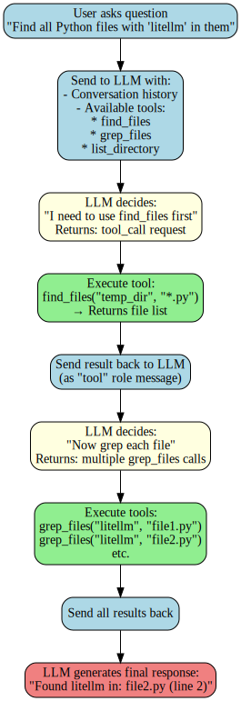

from lisette.core import mk_msg
import litellm
import os
model_name = "groq/openai/gpt-oss-20b"Agent From First Principle
date: 2025-11-15
📅 15/11/2025

In the age of LLM, there is a big explosion of autonomy populary known as Agentic systems. An agent, in the LLM context, is indeed about giving the model capabilities beyond just generating text. While an LLM can produce intelligent responses, an agent framework allows it to take actions, use tools, and interact with external systems.
Think of it this way: - LLM alone: Can reason and generate text, but is isolated - LLM as an agent: Can use tools, call APIs, execute code, access databases, and take actions based on its reasoning
Aim: There are many lib which tailors to various niche areas for this activity. Some are boated comes with steep learning curve. Here we are going to implement agentic system for file search agent an LLM from ground up. Our goal is to search your filesystem using tools like find, grep, and ls.
We will learn how agents work by implementing one ourself, understanding:
- How to give LLMs access to tools
- How to handle tool calls safely
- How to create an agent loop that reasons and actsWe have to implement everything from scratch from first principle. For llm calling we will use litellm a thing wrapper and aggregator, toolslm for tool calling helper. The model to use groq/openai/gpt-oss-20b.
In this experiment I am using Groq for LLM inferenece, any other LLM system with tool calling can be used in its place. I have already setup the api from Groq and set it as env variable name GROQ_API_KEY. If you are useing colab add this in secret.
Before we build our agent, let’s understand the foundation: how messages work in LLM systems. Every interaction is structured as messages with specific roles.
Building MSG
m = "Oh Hello There, Myself Sagar"
mk_msg(m){'role': 'user', 'content': 'Oh Hello There, Myself Sagar'}Lets go deeper on the above output. Here there are couple of things to keep in mind. 1. Role : indicate various palyer in the a simple message. Below are fewer - user : message sent by the user, like the message one sent to the chatgpt text box - system : overall the behviour of the given system - assistant : model responses - think : special thinking for the reasoning model - tool : tool call 2. content : attributes for each field
mk_msg("You are a helpful math assistant", role='system'), mk_msg("What is 5 + 3?", role='user'),mk_msg("The answer is 8", role='assistant')({'role': 'system', 'content': 'You are a helpful math assistant'},
{'role': 'user', 'content': 'What is 5 + 3?'},
{'role': 'assistant', 'content': 'The answer is 8'})msg = [
mk_msg("You are a helpful math assistant", role='system'),
mk_msg("What is 5 + 3?", role='user'),
#mk_msg("The answer is 8", role='assistant')
]
msg[{'role': 'system', 'content': 'You are a helpful math assistant'},
{'role': 'user', 'content': 'What is 5 + 3?'}]litellm setup
r = litellm.completion(
model=model_name,
messages=msg,
)
r.choices[Choices(finish_reason='stop', index=0, message=Message(content='The answer is 8.', role='assistant', tool_calls=None, function_call=None, provider_specific_fields=None, reasoning='The user asks: "What is 5 + 3?" It\'s a simple arithmetic question. The answer is 8. We should respond simply.'))]print(r.choices[0].message.content)
print(r.choices[0].message.role)The answer is 8.
assistantLet’s break down the key parts of the response. The r.choices[0].message contains: - content: ‘5 + 3 = 8’ - This is the actual text response from the model - role: ‘assistant’ - This indicates the message came from the assistant (the LLM)
This is exactly the format we need if we wanted to continue the conversation! We have to append this message to msg list, then add another user message, and call the API again. This is known as conversational context, the pattern would be : 1. Start with your initial messages (system + user) 1. Get the response from the LLM 1. Append that assistant message to your msg list 1. Add a new user message 1. Call the API again with the full history This way, the model “remembers” what was said before. As you noted, longer context = more tokens = more cost and processing time, but also more coherent conversations.
next_msg = msg + [
mk_msg(r.choices[0].message.content, role=r.choices[0].message.role),
mk_msg("can you explain the resoning behind it as I am a 5 year old", role="user")
]
next_msg[{'role': 'system', 'content': 'You are a helpful math assistant'},
{'role': 'user', 'content': 'What is 5 + 3?'},
{'role': 'assistant', 'content': 'The answer is 8.'},
{'role': 'user',
'content': 'can you explain the resoning behind it as I am a 5 year old'}]r = litellm.completion(
model=model_name,
messages=next_msg,
)
rSure! Let’s think about it like a fun game with apples.
Start with 5 apples.
Imagine you have a bowl that already holds 5 shiny apples. Count them:
1, 2, 3, 4, 5.
So, we have 5 apples.Add 3 more apples.
Now someone puts 3 extra apples into the same bowl.
Count the new apples:
1, 2, 3.
So, we’re adding 3 apples to the bowl.Count all the apples together.
Put the 5 apples and the 3 new apples in one big group and count everything:
1, 2, 3, 4, 5, 6, 7, 8.
That gives us 8 apples in total.
So, when we do “5 + 3,” we’re just putting the 5 things and the 3 things together and seeing how many we have altogether. And that number is 8. Easy peasy!
- id:
chatcmpl-3c23ed54-473f-4729-bb1d-eabf3829de6f - model:
openai/gpt-oss-20b - finish_reason:
stop - usage:
Usage(completion_tokens=376, prompt_tokens=120, total_tokens=496, completion_tokens_details=CompletionTokensDetailsWrapper(accepted_prediction_tokens=None, audio_tokens=None, reasoning_tokens=126, rejected_prediction_tokens=None, text_tokens=None), prompt_tokens_details=None, queue_time=0.020862679, prompt_time=0.005752552, completion_time=0.370259862, total_time=0.376012414)
Now that we understand how LLMs handle conversations, let’s put this to work. We’ll build an agent that can actually do things - specifically, search files using command-line tools. This demonstrates how agents combine reasoning (LLM) with actions (tool execution).
Building a Safe File Search Agent
An agent in the LLM context is a system that can take actions beyond just generating text. While a standard LLM can reason and respond, an agent can execute commands, use tools, and interact with external systems.
In this section, we’re building a file search agent that can help users find and search through files using common bash commands like find, grep, and ls. This is a practical example because:
- Real-world utility: File searching is a common task that benefits from natural language interfaces
- Safety-first design: We’ll implement strict safeguards to ensure read-only operations
- Multi-tool coordination: The LLM must decide which tools to use and in what order

from toolslm.funccall import get_schema
import json
from fastcore.xtras import runMock Setup for File Search
Created temp_dir and some dummy files to perform agent.
import os
def test_setup():
# Clean up and create directories
os.system('rm -rf temp_dir')
os.makedirs('temp_dir/subdir', exist_ok=True)
# Create file1.py
with open('temp_dir/file1.py', 'w') as f:
f.write('''import numpy as np
from fastcore.xtras import run
def safe_run(cmd):
return run(cmd)
def helper():
pass
''')
# Create file2.py
with open('temp_dir/file2.py', 'w') as f:
f.write('''import pandas as pd
import litellm
def process_data():
return "data"
''')
# Create file3.py
with open('temp_dir/subdir/file3.py', 'w') as f:
f.write('''from fastcore.script import call_parse
def deep_function():
pass
''')
# Create test.ipynb
with open('temp_dir/test.ipynb', 'w') as f:
f.write('''{
"cells": [
{
"cell_type": "code",
"source": ["import litellm\\nprint('hello')"]
}
]
}
''')
# Create another.ipynb
with open('temp_dir/subdir/another.ipynb', 'w') as f:
f.write('''{
"cells": [
{
"cell_type": "code",
"source": ["def safe_run():\\n pass"]
}
]
}
''')
# Verify
os.system('find temp_dir -type f')
test_setup()Safe Run Safety Considerations
The flowchart shows our target architecture. But before implementing the tools, we must address a critical concern: security. Since our agent executes shell commands, we need strict safeguards. Our agent will perform only read operation no delete, update or execute. - Whitelist commands only: Only find, grep, and ls are allowed - Block dangerous characters: No pipes (|), semicolons (;), or command substitution - Read-only operations: No rm, mv, cp, or file modification commands - Structured arguments: Using command lists instead of shell strings to prevent injection
ALLOWED_COMMANDS = {'find', 'grep', 'ls'}
DANGEROUS_CHARS = {'|', ';', '&', '>', '<', '`', '$', '(', ')'}
def safe_run(cmd_list):
"""Safely execute only whitelisted commands"""
if not cmd_list:
raise ValueError("Empty command list")
if cmd_list[0] not in ALLOWED_COMMANDS:
raise ValueError(f"Command '{cmd_list[0]}' not allowed. Only {ALLOWED_COMMANDS} permitted.")
# Check for shell operators
for item in cmd_list:
if any(char in str(item) for char in DANGEROUS_CHARS):
raise ValueError(f"Dangerous characters detected in command")
return run(cmd_list)# Option 1: Using try/except
dangerous_tests = [
['rm', 'file'], # Not in whitelist
['find', '.', ';', 'rm'], # Semicolon
['grep', 'test', '&'], # Ampersand
['ls', '-lart', '|', 'wc']
]
for c in dangerous_tests:
try:
safe_run(c)
print("FAILED - should have raised error")
except ValueError as e:
print(f"PASSED - caught error: {e}")PASSED - caught error: Command 'rm' not allowed. Only {'find', 'ls', 'grep'} permitted.
PASSED - caught error: Dangerous characters detected in command
PASSED - caught error: Dangerous characters detected in command
PASSED - caught error: Dangerous characters detected in commandassert safe_run(['find', '.', '-name', '*.ipynb']) != '', "find should return output"
assert type(safe_run(['ls', '-la'])) == strWith safety established, let’s build the actual tools our agent will use. Each tool wraps a command-line utility with a clean Python interface.
Find
def find_files(
directory: str, # Starting directory (e.g., ".", "/home/user")
name: str = "*", # Filename pattern (e.g., "*.py", "test*")
file_type: str = '', # File type: "f" (file), "d" (dir), or None (any)
maxdepth: int = -1 # Limit search depth for safety
) -> str:
"""Find files matching criteria"""
cmd = ["find", directory]
if maxdepth != -1:
cmd += ['-maxdepth', str(maxdepth)]
if file_type != '':
cmd += ['-type', file_type]
cmd += ["-name", name]
try:
return safe_run(cmd)
except (IOError, OSError) as e:
return f"Error: {str(e)}"print(find_files('temp_dir', '*.py', maxdepth=5))temp_dir/file2.py
temp_dir/file1.py
temp_dir/subdir/file3.pyGrep files
For grep_files (grep): - pattern: str - What to search for - file_path: str - Which file to search in - ignore_case: bool = False - Case-insensitive? (translates to -i) - line_numbers: bool = False - Show line numbers? (translates to -n) - show_filename: bool = True - filenames to always appear for context (-H - Always show filename/-h - Never show filename)
def grep_files(
pattern: str, # Pattern to search for
file_path: str, # Single file to search in
ignore_case: bool = False, # Case-insensitive search (-i)
line_numbers: bool = False, # Show line numbers (-n)
show_filename: bool = True # Always show filename (-H)
) -> str:
"""Search for pattern in a single file using grep
For searching multiple files, first use find_files to get the list,
then call grep_files on each file separately.
Args:
pattern: Text pattern to search for
file_path: Path to a single file to search (not wildcards)
ignore_case: If True, ignore case when matching
line_numbers: If True, show line numbers in output
show_filename: If True, always show filename in output
Returns:
Grep output showing matching lines
"""
cmd = ["grep"]
if ignore_case:
cmd.append('-i')
if line_numbers:
cmd.append('-n')
if show_filename:
cmd.append('-H')
else:
cmd.append('-h')
cmd += [pattern, file_path]
try:
return safe_run(cmd)
except (IOError, OSError):
# grep returns exit code 1 when no matches found
return ""print(grep_files('import ', 'temp_dir/file2.py', line_numbers=True))temp_dir/file2.py:1:import pandas as pd
temp_dir/file2.py:2:import litellmprint(grep_files('import ', 'temp_dir/*', line_numbers=True))List Directory
For list_directory (ls): - directory: str - Which directory to list - show_hidden: bool = False - Include hidden files? (translates to -a) - long_format: bool = False - Detailed listing? (translates to -l)
def list_directory(
directory: str,
show_hidden: bool = False,
long_format: bool = False,
) -> str :
"""List directory given a directory"""
cmd = ["ls"]
if show_hidden: cmd.append('-a')
if long_format: cmd.append('-l')
cmd.append(directory)
try:
return safe_run(cmd)
except (IOError, OSError) as e:
return f"Error: {str(e)}"print(list_directory('temp_dir'))file1.py
file2.py
subdir
test.ipynbWe have our safe tools ready. Now comes the key part: teaching the LLM about these tools so it can decide when and how to use them. This is where tool schemas come in.
Basic Tool Object
Tools are functions - Like find_files, grep_files and list_directory functions that perform actual actions.
The model needs to know about them - We must describe these tools to the LLM using a schema (name, description, parameters) so it knows: - What tools are available - What each tool does - What inputs each tool expects
This prevents confusion - Without clear descriptions, the LLM wouldn’t know it can call these tools or how to use them properly.
We will use, toolslm uses to generate the schema automatically! The structure required for Groq/OpenAI expects.
Note: If you are using any thing other than the model groq/openai/gpt-oss-20b you have to tweek the tool format required for that model.
[
{
"type": "function",
"function": {
"name": "list_directory",
"description": "List directory given a directory\n\nReturns:\n- type: string",
"parameters": {
"type": "object",
"properties": {
"directory": {
"type": "string",
"description": ""
},
"show_hidden": {
"type": "boolean",
"description": "",
"default": false
},
"long_format": {
"type": "boolean",
"description": "",
"default": false
}
},
"required": ["directory"]
}
}
}
]def build_tool(func):
return {
"type": "function",
"function": get_schema(func, pname='parameters')
}
tools = [build_tool(i) for i in (list_directory, grep_files, find_files)]
tools[{'type': 'function',
'function': {'name': 'list_directory',
'description': 'List directory given a directory\n\nReturns:\n- type: string',
'parameters': {'type': 'object',
'properties': {'directory': {'type': 'string', 'description': ''},
'show_hidden': {'type': 'boolean', 'description': '', 'default': False},
'long_format': {'type': 'boolean', 'description': '', 'default': False}},
'required': ['directory']}}},
{'type': 'function',
'function': {'name': 'grep_files',
'description': 'Search for pattern in a single file using grep\n\n For searching multiple files, first use find_files to get the list,\n then call grep_files on each file separately.\n\n Args:\n pattern: Text pattern to search for\n file_path: Path to a single file to search (not wildcards)\n ignore_case: If True, ignore case when matching\n line_numbers: If True, show line numbers in output\n show_filename: If True, always show filename in output\n\n Returns:\n Grep output showing matching lines\n \n\nReturns:\n- type: string',
'parameters': {'type': 'object',
'properties': {'pattern': {'type': 'string',
'description': 'Pattern to search for'},
'file_path': {'type': 'string',
'description': 'Single file to search in'},
'ignore_case': {'type': 'boolean',
'description': 'Case-insensitive search (-i)',
'default': False},
'line_numbers': {'type': 'boolean',
'description': 'Show line numbers (-n)',
'default': False},
'show_filename': {'type': 'boolean',
'description': 'Always show filename (-H)',
'default': True}},
'required': ['pattern', 'file_path']}}},
{'type': 'function',
'function': {'name': 'find_files',
'description': 'Find files matching criteria\n\nReturns:\n- type: string',
'parameters': {'type': 'object',
'properties': {'directory': {'type': 'string',
'description': 'Starting directory (e.g., ".", "/home/user")'},
'name': {'type': 'string',
'description': 'Filename pattern (e.g., "*.py", "test*")',
'default': '*'},
'file_type': {'type': 'string',
'description': 'File type: "f" (file), "d" (dir), or None (any)',
'default': ''},
'maxdepth': {'type': 'integer',
'description': 'Limit search depth for safety',
'default': -1}},
'required': ['directory']}}}]Since we are using a reasoning model that can do arithmetic on its own, need to force it to use the calculator tools.
Here’s what the tool_choice parameter does: - None (default): Model won’t use tools at all - "auto": Model decides whether to use tools (might skip them for simple math) - "required": Model MUST use one of the provided tools
Note : After using required, the model we are using is a Reasoning Model. There is a chance it can do the simple arithmetic without waiting for tool use stuff.
Tool Loop
# llm call
def invoke(pr):
return litellm.completion(
model=model_name,
messages=pr,
tools=tools,
tool_choice="auto"
)# basic message setup
def get_msg(msg):
return [
mk_msg(role="system", content="You help users find and search files safely using command-line tools. Use find_files for locating files, grep_files for searching content, and list_directory for browsing. Provide clear, accurate results based only on tool outputs."),
mk_msg(role="user", content=msg,)
]
pr = get_msg('list all the files in the current directory.')
pr[{'role': 'system',
'content': 'You help users find and search files safely using command-line tools. Use find_files for locating files, grep_files for searching content, and list_directory for browsing. Provide clear, accurate results based only on tool outputs.'},
{'role': 'user', 'content': 'list all the files in the current directory.'}]pr = get_msg('list all the files in the current directory.')
res = invoke(pr)
res🔧 list_directory({“directory”:“.”})
- id:
chatcmpl-a6f7fc62-0ea0-4316-b348-9d4dfa6ee025 - model:
openai/gpt-oss-20b - finish_reason:
tool_calls - usage:
Usage(completion_tokens=35, prompt_tokens=532, total_tokens=567, completion_tokens_details=CompletionTokensDetailsWrapper(accepted_prediction_tokens=None, audio_tokens=None, reasoning_tokens=12, rejected_prediction_tokens=None, text_tokens=None), prompt_tokens_details=None, queue_time=0.01802854, prompt_time=0.02795786, completion_time=0.034892549, total_time=0.062850409)
# to check if the resp have the tool_calls
def has_tools(res):
return hasattr(res.choices[0].message, 'tool_calls')has_tools(res)TrueExtract the function from the tool object of the response.
def res2func_nm(res):
if hasattr(res.choices[0].message.tool_calls[0], 'function'):
func_name = res.choices[0].message.tool_calls[0].function.name
func = globals().get(func_name, None)
return func
return False
res2func_nm(res)list_directory
def list_directory(directory: str, show_hidden: bool=False, long_format: bool=False) -> str
List directory given a directory
Extract the function kwargs from the tool object of the response.
def get_res2func_kwargs(res):
if hasattr(res.choices[0].message.tool_calls[0], 'function'):
func_kwargs = res.choices[0].message.tool_calls[0].function.arguments
func_kwargs = json.loads(func_kwargs)
return func_kwargs
return False
get_res2func_kwargs(res){'directory': '.'}Now we need to add two things to your message history:
- The assistant’s message (with the tool_calls) - so the LLM knows what it asked for
- The tool result - as a message with
role='tool'
The assistant’s message: - "role" : 'assistant' - "content" : "" - "tool_calls" : res.choices[0].message.tool_calls
The tool result message needs: - role: 'tool' - tool_call_id: The ID from the tool call - content: The result as a string
def build_next_call(res):
"""A helper function to extract new messages with tools and assitant prompt."""
func = res2func_nm(res)
func_kwargs = get_res2func_kwargs(res)
t_msg = mk_msg({
"role":'tool',
'tool_call_id':res.choices[0].message.tool_calls[0].id,
'content':str(func(**func_kwargs))
})
a_msg= mk_msg({
"role":'assistant',
"content": "",
'tool_calls': res.choices[0].message.tool_calls
})
return [ a_msg, t_msg]def next_msg(pr, res):
"""extracting and appending the new prompts from `res` i.e for tool and assiant to the original prompt `pr` """
return pr + build_next_call(res)
pr_ = next_msg(pr, res)
pr_[{'role': 'system',
'content': 'You help users find and search files safely using command-line tools. Use find_files for locating files, grep_files for searching content, and list_directory for browsing. Provide clear, accurate results based only on tool outputs.'},
{'role': 'user', 'content': 'list all the files in the current directory.'},
{'role': 'assistant',
'content': '',
'tool_calls': [ChatCompletionMessageToolCall(function=Function(arguments='{"directory":"."}', name='list_directory'), id='fc_a63bcd76-0a4c-4a1a-a880-894fbcd464db', type='function')]},
{'role': 'tool',
'tool_call_id': 'fc_a63bcd76-0a4c-4a1a-a880-894fbcd464db',
'content': 'sample_data\ntemp_dir'}]pr = get_msg('list all the files in the current directory.')
res = invoke(pr)
res🔧 list_directory({“directory”:“.”})
- id:
chatcmpl-950fe2b9-7e08-424d-ba34-183d566f7aa0 - model:
openai/gpt-oss-20b - finish_reason:
tool_calls - usage:
Usage(completion_tokens=31, prompt_tokens=532, total_tokens=563, completion_tokens_details=CompletionTokensDetailsWrapper(accepted_prediction_tokens=None, audio_tokens=None, reasoning_tokens=8, rejected_prediction_tokens=None, text_tokens=None), prompt_tokens_details=None, queue_time=0.017648798, prompt_time=0.030200318, completion_time=0.030406804, total_time=0.060607122)
if has_tools(res):
func_nm, func_kwargs = res2func_nm(res), get_res2func_kwargs(res)
func_nm, func_kwargs(<function __main__.list_directory(directory: str, show_hidden: bool = False, long_format: bool = False) -> str>,
{'directory': '.'})res_ = invoke(pr_)
res_The current directory contains:
sample_datatemp_dir
- id:
chatcmpl-2925729f-ea58-4708-8977-406fd029e125 - model:
openai/gpt-oss-20b - finish_reason:
stop - usage:
Usage(completion_tokens=53, prompt_tokens=561, total_tokens=614, completion_tokens_details=CompletionTokensDetailsWrapper(accepted_prediction_tokens=None, audio_tokens=None, reasoning_tokens=29, rejected_prediction_tokens=None, text_tokens=None), prompt_tokens_details=None, queue_time=0.020229679, prompt_time=0.029933307, completion_time=0.051773638, total_time=0.081706945)
The model returns finish_reason as stop for stopping the exexcution.
res_.choices[0].finish_reason'stop'The LLM now knows our tools exist. The final piece is the agent loop: repeatedly calling the LLM, executing its requested tools, and feeding back results until the task completes.
from pprint import pprint
def tool_loop(pr, max_steps=10, debug=False):
"""Execute agentic loop: LLM calls tools until task is complete"""
# Display initial messages
print("\n### Initial Messages:")
for msg in pr:
role = msg['role']
content = msg.get('content', '[tool_call]')
print(f"**{role}**: {content}")
for step in range(max_steps):
print(f"\n{'='*20} Step {step} {'='*20}")
res = invoke(pr)
# Debug: show full response
if debug:
print("\n**Debug - Full Response:**")
pprint(res.choices[0].message.model_dump())
# Check if done
if not has_tools(res) or res.choices[0].finish_reason == 'stop':
print("\n✓ Complete! Final response:\n")
content = res.choices[0].message.content
if content:
print(content)
return res
# Extract and execute tool
func = res2func_nm(res)
func_kwargs = get_res2func_kwargs(res)
print(f"🔧 Tool: {func.__name__}")
print(f" Args: {func_kwargs}")
pr = next_msg(pr, res)
result_preview = pr[-1]['content'][:200]
print(f" Result: {result_preview}{'...' if len(pr[-1]['content']) > 200 else ''}")
print(f"\n⚠️ Max steps ({max_steps}) reached!")
return respr = get_msg('list all the files in the "temp_dir" directory.')
_ = tool_loop(pr, debug=True)
### Initial Messages:
**system**: You help users find and search files safely using command-line tools. Use find_files for locating files, grep_files for searching content, and list_directory for browsing. Provide clear, accurate results based only on tool outputs.
**user**: list all the files in the "temp_dir" directory.
==================== Step 0 ====================
**Debug - Full Response:**
{'content': None,
'function_call': None,
'reasoning': "User wants to list all files in temp_dir directory. We'll call "
'list_directory.',
'role': 'assistant',
'tool_calls': [{'function': {'arguments': '{"directory":"temp_dir","long_format":false,"show_hidden":false}',
'name': 'list_directory'},
'id': 'fc_f10ea2ae-a331-492e-a9df-b245850dffa4',
'type': 'function'}]}
🔧 Tool: list_directory
Args: {'directory': 'temp_dir', 'long_format': False, 'show_hidden': False}
Result: file1.py
file2.py
subdir
test.ipynb
==================== Step 1 ====================
**Debug - Full Response:**
{'content': '**Contents of `temp_dir`:**\n'
'\n'
'- `file1.py` \n'
'- `file2.py` \n'
'- `subdir` \n'
'- `test.ipynb`',
'function_call': None,
'reasoning': 'The user requested: "list all the files in the "temp_dir" '
'directory." We have list_directory output: file1.py, file2.py, '
'subdir, test.ipynb. The output is correct. Should provide as '
'answer.',
'role': 'assistant',
'tool_calls': None}
✓ Complete! Final response:
**Contents of `temp_dir`:**
- `file1.py`
- `file2.py`
- `subdir`
- `test.ipynb`pr = get_msg("Search for all .ipynb files in temp_dir, but only go 2 levels deep")
_ = tool_loop(pr, max_steps=10)
### Initial Messages:
**system**: You help users find and search files safely using command-line tools. Use find_files for locating files, grep_files for searching content, and list_directory for browsing. Provide clear, accurate results based only on tool outputs.
**user**: Search for all .ipynb files in temp_dir, but only go 2 levels deep
==================== Step 0 ====================
🔧 Tool: find_files
Args: {'directory': 'temp_dir', 'file_type': 'f', 'maxdepth': 2, 'name': '*.ipynb'}
Result: temp_dir/subdir/another.ipynb
temp_dir/test.ipynb
==================== Step 1 ====================
✓ Complete! Final response:
Here are the `.ipynb` files found in `temp_dir` (search depth limited to 2 levels):
- `temp_dir/test.ipynb`
- `temp_dir/subdir/another.ipynb`# Simple tests
test_prompts = [
# Find files
"Find all Python files in temp_dir",
"Search for all .ipynb files in temp_dir, but only go 2 levels deep",
"Find all directories in temp_dir",
# Grep tests
"Search for the word 'import' in the file temp_dir/file1.py",
"Find all lines containing 'litellm' in temp_dir/test.ipynb",
# Multi-tool tests
"Find all Python files in temp_dir and then search for 'def safe_run' in them",
"Look for all .py files in temp_dir and tell me which ones contain the word 'fastcore'",
]test_prompts[::3]['Find all Python files in temp_dir',
"Search for the word 'import' in the file temp_dir/file1.py",
"Look for all .py files in temp_dir and tell me which ones contain the word 'fastcore'"]I am just calling the tool for 3 prompts. As I am using free tier for service. It might fail with the rate limiting error, please wait and retry. The llm might give wrong ans like not searching a directory(due to the non deterministic nature of the model inference). There is an awsome blog from Thinking Machine Lab for this specific behaviour.
for i in test_prompts[::3]:
pr = get_msg(i)
_ = tool_loop(pr, max_steps=10)
pprint("***" * 35 )
### Initial Messages:
**system**: You help users find and search files safely using command-line tools. Use find_files for locating files, grep_files for searching content, and list_directory for browsing. Provide clear, accurate results based only on tool outputs.
**user**: Find all Python files in temp_dir
==================== Step 0 ====================
🔧 Tool: find_files
Args: {'directory': 'temp_dir', 'file_type': 'f', 'name': '*.py'}
Result: temp_dir/file2.py
temp_dir/file1.py
temp_dir/subdir/file3.py
==================== Step 1 ====================
✓ Complete! Final response:
Here are all the Python files located under `temp_dir`:
```
temp_dir/file2.py
temp_dir/file1.py
temp_dir/subdir/file3.py
```
Let me know if you’d like to inspect any of these files or search inside them!
'*********************************************************************************************************'
### Initial Messages:
**system**: You help users find and search files safely using command-line tools. Use find_files for locating files, grep_files for searching content, and list_directory for browsing. Provide clear, accurate results based only on tool outputs.
**user**: Search for the word 'import' in the file temp_dir/file1.py
==================== Step 0 ====================
🔧 Tool: grep_files
Args: {'file_path': 'temp_dir/file1.py', 'ignore_case': False, 'line_numbers': False, 'pattern': 'import', 'show_filename': True}
Result: temp_dir/file1.py:import numpy as np
temp_dir/file1.py:from fastcore.xtras import run
==================== Step 1 ====================
✓ Complete! Final response:
**Search results for the word “import” in `temp_dir/file1.py`:**
```
temp_dir/file1.py:import numpy as np
temp_dir/file1.py:from fastcore.xtras import run
```
These are the only lines in the file that contain the word `import`.
'*********************************************************************************************************'
### Initial Messages:
**system**: You help users find and search files safely using command-line tools. Use find_files for locating files, grep_files for searching content, and list_directory for browsing. Provide clear, accurate results based only on tool outputs.
**user**: Look for all .py files in temp_dir and tell me which ones contain the word 'fastcore'
==================== Step 0 ====================
🔧 Tool: find_files
Args: {'directory': 'temp_dir', 'file_type': '', 'maxdepth': -1, 'name': '*.py'}
Result: temp_dir/file2.py
temp_dir/file1.py
temp_dir/subdir/file3.py
==================== Step 1 ====================
🔧 Tool: grep_files
Args: {'file_path': 'temp_dir/file1.py', 'ignore_case': False, 'line_numbers': False, 'pattern': 'fastcore', 'show_filename': True}
Result: temp_dir/file1.py:from fastcore.xtras import run
==================== Step 2 ====================
🔧 Tool: grep_files
Args: {'file_path': 'temp_dir/file2.py', 'ignore_case': False, 'line_numbers': False, 'pattern': 'fastcore', 'show_filename': True}
Result:
==================== Step 3 ====================
🔧 Tool: grep_files
Args: {'file_path': 'temp_dir/subdir/file3.py', 'ignore_case': False, 'line_numbers': False, 'pattern': 'fastcore', 'show_filename': True}
Result: temp_dir/subdir/file3.py:from fastcore.script import call_parse
==================== Step 4 ====================
✓ Complete! Final response:
Here are the `.py` files in `temp_dir` that contain the word **`fastcore`**:
| File | Line(s) that match |
|------|--------------------|
| `temp_dir/file1.py` | `from fastcore.xtras import run` |
| `temp_dir/subdir/file3.py` | `from fastcore.script import call_parse` |
`temp_dir/file2.py` does **not** contain the word `fastcore`.
'*********************************************************************************************************'Conclusion
We’ve built a complete file search agent from scratch, demystifying how LLM agents actually work under the hood. Starting with simple message structures, we progressed through safe tool design, schema generation, and finally implemented a full agent loop that reasons and acts.
Key takeaways:
- Agents = LLM reasoning + tool execution - The model decides what to do, your code provides the how
- Safety first - Whitelisting commands and validating inputs is crucial when executing system commands
- The agent loop is simple - It’s just: call LLM → execute tools → feed back results → repeat until done
- Tool schemas bridge the gap - They teach the LLM what capabilities it has available
This foundation extends far beyond file search. The same patterns work for: - Database agents that query and analyze data - Web automation agents using Playwright or Selenium
- API integration agents that coordinate multiple services - Code execution agents for data science workflows and many more
By building from first principle, we understand exactly what’s happening at each step, making debugging easier and giving us full control over safety, costs, and behavior.